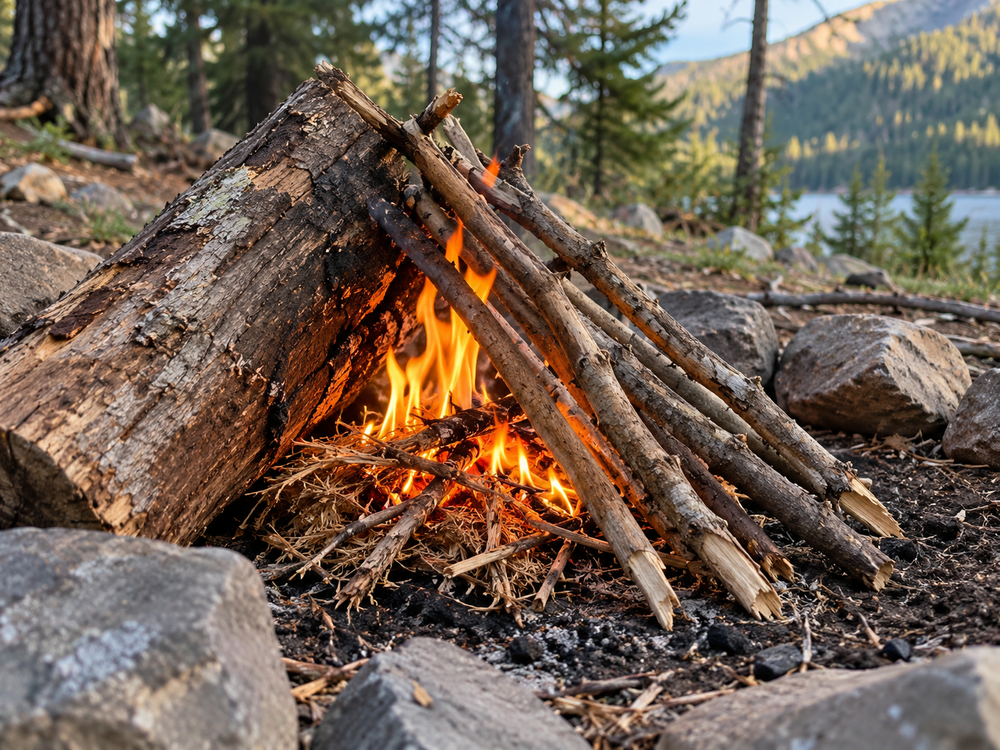

Lean-to Fire

The lean-to fire uses a larger piece of wood to support smaller pieces of kindling.
What It Is
A larger piece of wood is placed on the ground. Smaller sticks are leaned against it with tinder placed underneath.
When to Use It
It is a simple fire structure that can provide support for small pieces of kindling while a fire is being started.
How It Works
Tinder is placed next to the larger piece of wood. Small sticks lean over the tinder. More wood can be added carefully after the fire begins burning.
Materials Needed
- Tinder
- Small dry sticks
- One larger piece of wood
- Additional firewood
Source
Fire safety information: National Park Service - Campfires